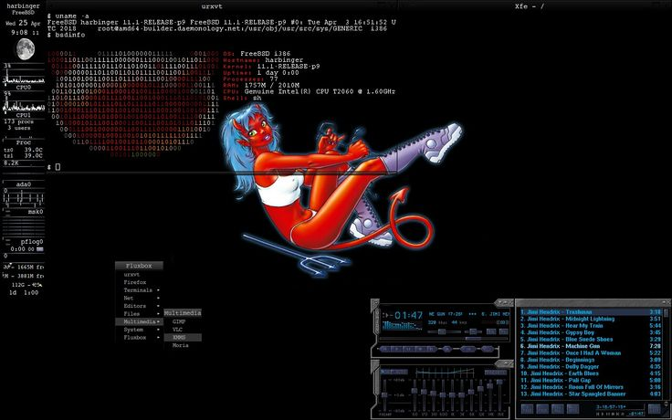
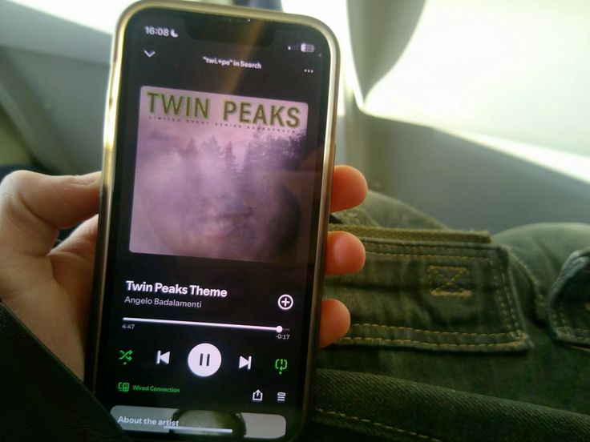
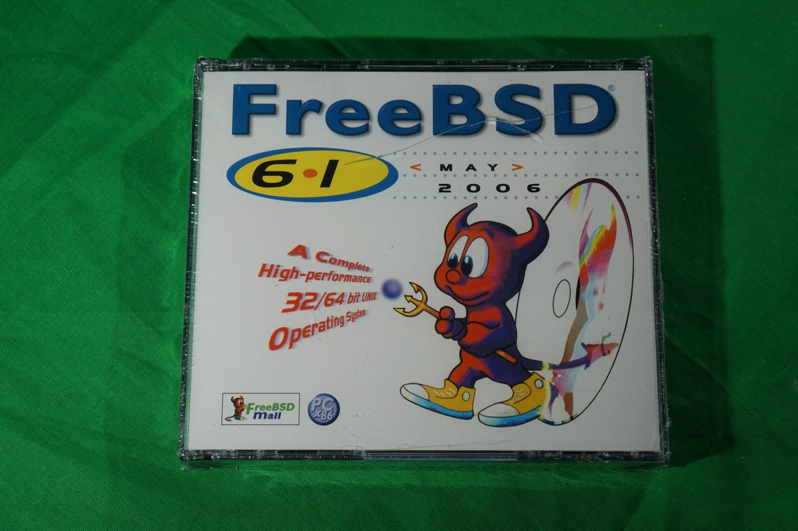
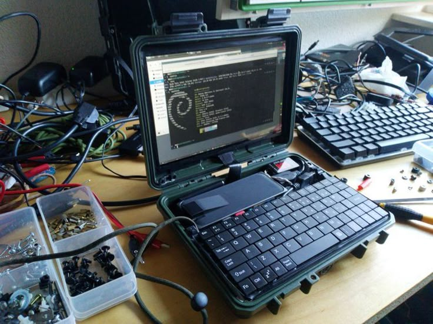
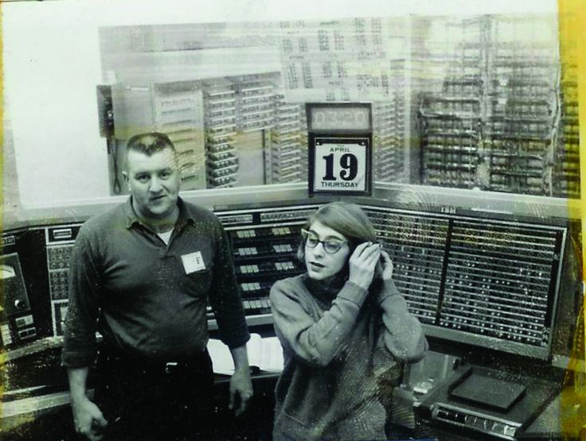
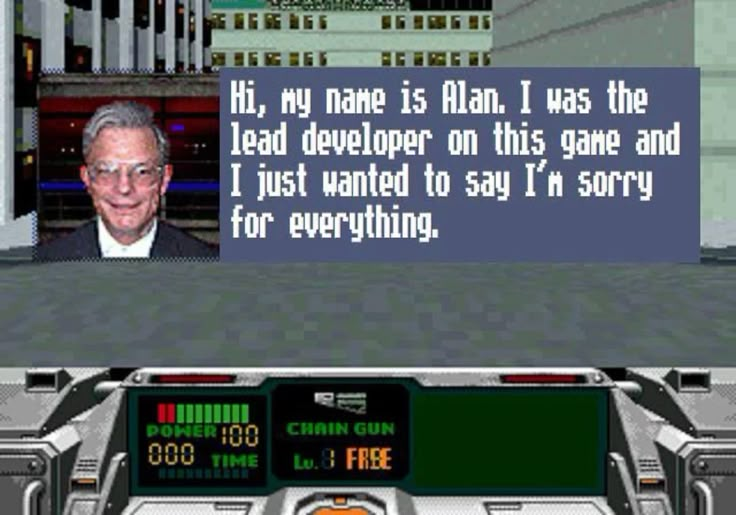

ana alaska kennedy
girl dev
Age: 25
Location: usa
Last Login: 06/10/06
ana kennedy's blurb
about me: [ homelab enthusiast, game developer, and web dev. drinks a lot of rockstar energy drinks to stay awake. im really into the x files and king of the hill. loving kingdom hearts 2 for playstation 2. listening to a lot of from first to last and daft punk. ]
06/16/06
feeling: big smile 
"listening to the new "kitchen" album on spotify called "blue heeler in ugly snowlight, grey on gray on gray on white." really gorgeous record. i think there's a lot of potential in music like this. been working a lot on my homelab, all of my network reports are finally working properly. crontab can be weird with paths and sudo privileges on macos lol. i'm wanting to setup port-forwarding for my ssh and samba file server so i can access it when im away. i have a double nat setup in my room so i think i can find a way to secure it enough hopefully? if anyone has any pointers, please let me know. i might do this all through a docker container. speaking of docker - i finally got my first container running! it's a really simple one, but its called fail2ban for ssh attempts. if you fail the password a certain amount of times you're kicked out (preventing bruteforce attacks via pwnagotchi or flipper zero.) really lovely code. i'm thinking of possibly switching my linux distro in the future... i know everyone talks about arch but i'm kind of jealous of its ability to run wayland so well. you have to do a lot of workarounds to get it up and running on mint. if i have a day of nothing in the future maybe i will try and switch over. my birthday is coming up on the 21st - im excited for that. another year older huh? i've lived a lot of life and seen a lot of really special places!!! and i think i've finally found my peace and calling in life - halfway through my twenties. its crazy how that stuff works out lol. i truly am in such a better place than i used to be jumping from place to place in LA.
06/10/06
is this thing on? hello world :-] .. it's been a minute since i've really put my thoughts out there. been working on getting my comptia a+ cert.. i'm feeling a lot more confident in it now. setup my own home network this week & have everything running through ethernet.. i have my pi running shell scripts for packet sniffing & device updates. you know the feeling when you've become so comfortable with something but you're always finding new things to learn about it? that's how i feel about computers. been reading up on asahi linux - you can dualboot on a silicon mac now? fedora remix exists and is apparently supposed to be pretty stable. going to get an SSD sometime and give it a go. i got my hands on an iphone 3gs but the batteries friiiiied :| .. going on my to do list to fix.. would love to get it up and running like my iphone 5s i jailbroke. i miss the feeling of being out in the world with just an ipod touch or an early iphone.. too bad 2g and 3g are disabled otherwise i'd get cell working on this thing!! if anyone has any ideas let me know. maybe a hotspot? is it too old? to be continued...
photos i like from the world wide web





